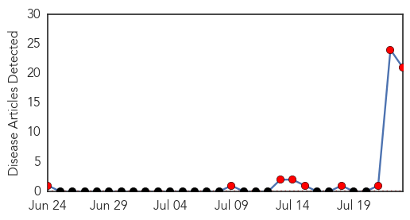
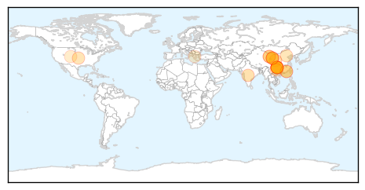
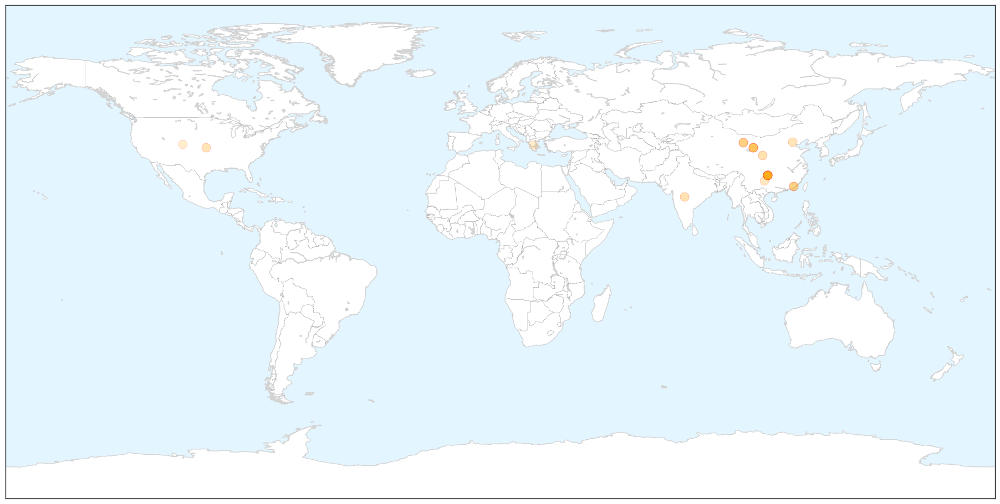
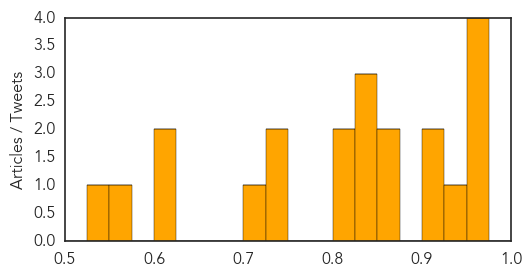

Hemmorhagic Fever
30-Day Web Trend
4 alerts, 0 warnings

30-Day Twitter Trend
0 alerts, 0 warnings

Article Locations


Article Confidences

Top Articles:
-
No articles found for Jul 23, 2014
Top Tweets:
-
No tweets found for Jul 23, 2014
Bubonic Plague
30-Day Web Trend
9 alerts, 0 warnings

30-Day Twitter Trend
0 alerts, 0 warnings

Article Locations

X

Article Confidences
Top Articles:
- 0.970
- China Is Facing an Outbreak of a Disease That Once Killed Millions
- 0.962
- Chinese officials seal off 'plague' city, puzzling US experts
- 0.959
- Chinese Officials Seal Off 'Plague' City, Puzzling US Experts
- 0.953
- Bubonic Plague Outbreak in Northwest China - Dumb Out
- 0.937
- Black Death Claims New Victim
- 0.906
- Parts of China quarantined after bubonic plague death: report
- 0.906
- Parts of China quarantined after bubonic plague death: report
- 0.867
- Chinese City Quarantined After Plague Death
- 0.864
- DOH allays fear on China’s bubonic plague
- 0.850
- China 'Seals Off' Town After Man Dies of Bubonic Plague
- 0.829
- Bubonic plague case triggers lockdown of Chinese city — RT News
- 0.829
- Bubonic plague case triggers lockdown of Chinese city — RT News
- 0.824
- Chinese Town with 30,000 Population Sealed Off after Bubonic Plague Death; 151 Facing Quarantine [Photos+Video]
- 0.812
- Chinese man dies of bubonic plague after feeding his dog a marmot
- 0.743
- The Portland Press Herald / Maine Sunday Telegram
- 0.739
- City Quarantined, One Dead
- 0.716
- Following bubonic plague death, China seals off town of 30,000
- 0.611
- China bubonic plague death: Town of 30,000 placed in quarantine after man dies sparking 'Black Death' outbreak fears
- 0.602
- Chinese City in Quarantine After Bubonic Plague Death: Report
- 0.574
- Bubonic Plague Hits China
- 0.548
- Plague Found in China, City of Yumen Sealed Off
Top Tweets:
-
No tweets found for Jul 23, 2014